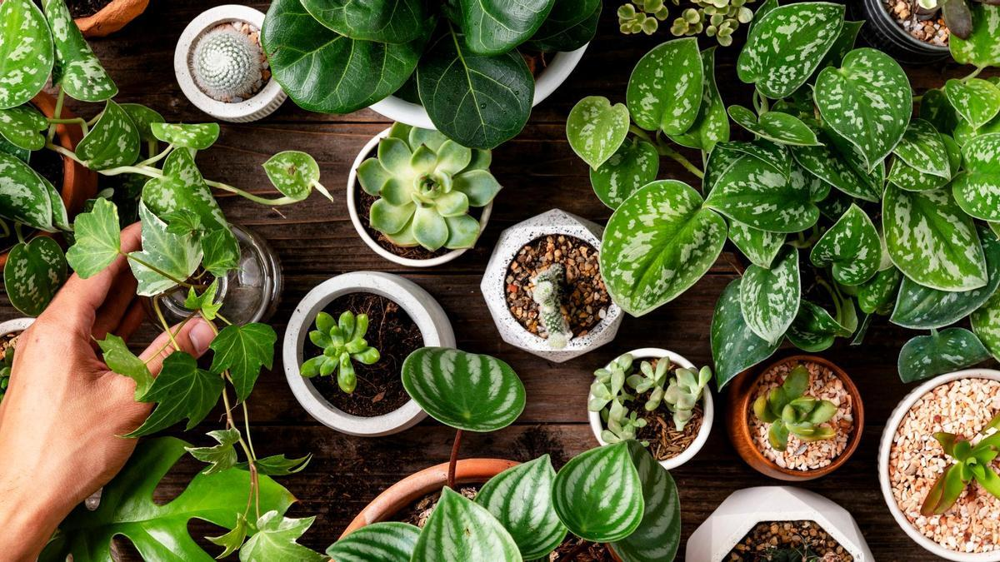

¿Qué sembrar en un huerto escolar?
Plantas recomendadas para huertos escolares

Un huerto escolar es una excelente herramienta educativa que permite a los estudiantes aprender sobre naturaleza, alimentación y sostenibilidad. Estas son algunas opciones ideales para sembrar:
Hortalizas de crecimiento rápido
- Lechugas (cosecha en 30-45 días)
- Rábanos (cosecha en 20-30 días)
- Espinacas (cosecha en 40-50 días)
- Zanahorias pequeñas (cosecha en 50-60 días)
Plantas aromáticas
- Albahaca
- Menta
- Perejil
- Tomillo
Otros cultivos educativos
- Girasoles (observación del crecimiento)
- Tomates cherry (fáciles de cultivar)
- Judías o frijoles (germinación visible)
- Calabacines (productivos en poco espacio)